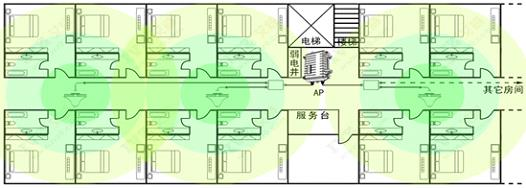

医院无线网络覆盖方案
一、方案宗旨
本方案根据用户实际无线网络覆盖需求，基于整体化无线网络架构方案，按照网络架构进行模块化分层部署设计。无线网络作为底层通信平台，采用业界先进的AP部署方式，具有极强的可靠性、扩展性和易维护性。结合安全技术，从接入认证、数据加密、安全策略等多个角度进行安全一体化设计，充分保证无线数据通信的安全性和完备的无线系统防御措施。无线整体化解决方案，将无线漫游技术、射频信号技术、安全加密技术、综合管理系统、业务功能设计等进行分层模块化部署设计，将系统资源有效整合，充分发挥设备功能、性能优势，提供高质量、高可靠性的无线网络。
二、医院部署无线网络的关注点
移动终端漫游问题
无线AP间的干扰问题
无线设备发生故障时，如何保证业务不中断
设备管理问题
三、高速、稳定、安全的无线网络解决方案
1、无线网络标准选择
高带宽，802.11n的高带宽，使得医院无线网络实际吞吐量有了数倍提升，并能满足无线拓展应用的需求。
高性价比，随着技术的发展，802.11n无线网络的建设成本不断降低，与传统802.11a/b/g已比较接近，并且全面兼容802.11a/b/g，性价比更高。
2、无线漫游
使用传统的无线网络，移动终端跨控制器漫游时，仍由原来控制器管理，所有数据仍要回到原有控制器进行转发，不仅会造成网络的阻塞，还会由于漫游切换时间长，造成网络的中断。
我司采用的只能漫游技术可以实现当终端移动到另外一个区域时，可以直接由本地的控制器进行转发，而无需反回到原控制器，从而提高了漫游转换效率，实现小于50ms的漫游切换。
3、统一射频管理，消除信号干扰
通过无线控制器，对全网的AP进行统一射频管理。对所有AP进行信道自动调整，在保证覆盖效果的前提下，确保AP之间信号无干扰。
4、AP智能转换技术，消除断网隐患
在控制器发生故障时，AP会自动感知控制器发生故障，并智能转换为自主工作模式，无需人工干预，继续转发数据，真正实现无线网络无中断。
5、智能简单的无线网络管理
无线网络建成后，面对分布众多的AP来说，管理和维护工作尤为重要。通过我们的一体化平台，可对全网设备的部署、监控、告警、报表等方面进行管理，大大降低网络维护的工作量。
四、无线网络覆盖解决方案（分布式无线AP解决方案）
1、无线网络拓扑图

2、无线网络拓扑说明
在每一区域放置分布式无线AP，通过馈线连接吸顶增益天线安装在天花板上，通过安装在弱电管井中的POE交换机对AP进行供电及网络信号传输，达到无线信号覆盖的目的。
3、分布式无线AP解决方案特点
无线信号覆盖效果好，由于无线信号采用馈线传输方式，故障率低，后期维护方便。